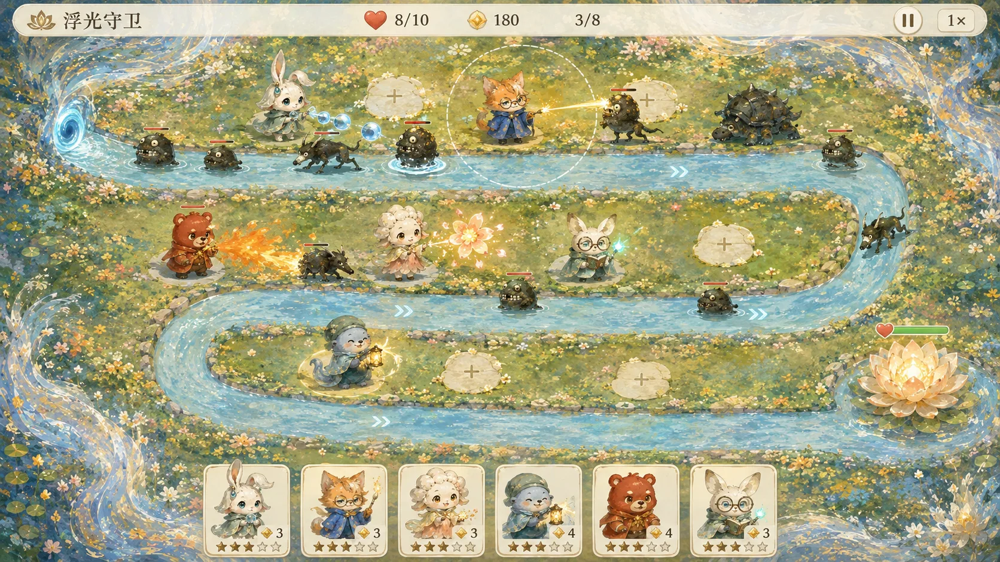

Vibe Coding / PROJECT 15
Dream Guardians
浮光守卫：从反馈到可玩的梦境塔防
把角色、场景、经济系统和玩家反馈接成可玩的产品，而不是停在一张游戏概念图。
- ROLE
- 玩法与体验策划、视觉指导、AI 辅助构建
- TIME
- 2026
- TOOLS
- HTML / CSS / JavaScript、Canvas、AI 图像生成与辅助编码
- TYPE
- Playable web game
- STATUS
- Playable prototype / v2.3

01 / OVERVIEW
Overview
《浮光守卫》是一款梦境河道塔防小游戏。十幅印象派画境全部开放，十二位原创动物守卫在岸边布阵，阻止持续进入的墨潮抵达莲花。每关免费自带金币工坊，玩家在升级生产、扩展火力与培养伙伴之间做选择。完整图片奖池展示所有角色、碎片、道具与概率；击败怪物和通关获得永久星尘，挑战三星获得额外抽奖券。游戏有独立文件夹与便携包，作品集只连接其入口。
02 / PROBLEM
Problem
早期体验出现“三个守卫也能挂机过关”、后期金币闲置，以及首页像说明页而不像游戏的问题。改动从这些实际反馈开始。
03 / OBSERVATION / INSIGHT
Observation / Insight
塔防的吸引力来自持续决策，不能只增加关卡编号；主菜单也应该先传达世界、角色和开始行动，而不是让玩家阅读规则。
04 / DESIGN GOAL
Design Goal
让早期补位、中期升级与后期阵容产生差异；把玩法、资源来源和角色获取说清楚，并保持游戏文件独立。
05 / AI OPPORTUNITY
AI Opportunity
AI 辅助生成场景和实现代码，人负责审美选择、规则讨论、试玩反馈与参数取舍。自动模拟用于检查策略表现，不替代真人体验。
06 / USER FLOW
User Flow
从入口到完成任务，保留最短、可以解释的操作链路。
- 01选择关卡与伙伴
- 02布阵与经营金币
- 03持续抵御怪物
- 04升级或使用道具
- 05结算与继续挑战
依据现有项目资料整理的流程图，不代表另行开展了用户访谈或行为研究。
07 / INFORMATION ARCHITECTURE
Information Architecture
把核心对象、操作和反馈分别组织，避免功能堆叠掩盖主要任务。
主菜单
- 开始与继续
- 伙伴与图鉴
- 抽奖与商店
战斗
- 河道与落脚点
- 工坊与升级
- 波次与莲花生命
成长
- 十关星级
- 伙伴培养
- 本地存档与迁移
08 / EXPLORATION
Exploration
连续波次、工坊投资、普通怪与召唤怪的差异奖励、三入口缓冲，以及全景主菜单是不同层面的体验探索。
09 / PROTOTYPE
Prototype
演示在独立游戏页面打开。本地进度保存在当前浏览器，清理浏览器数据会移除存档。
10 / AI WORKFLOW
AI Workflow
把人的设计判断与 AI 可以辅助的工作分开说明。
Human directs.
- 提出体验问题与选择美术方向
- 决定玩法、风险与数值取舍
- 解释验证边界
AI assists.
- 辅助代码与场景生成
- 执行自动模拟和逻辑检查
- 不代替真人体验判断
11 / BUILD / VIBE CODING
Build / Vibe Coding
原生浏览器代码与 Canvas 承载战斗；独立文件夹可单独分发，作品集只连接入口。当前角色和游戏素材为既有版本，不展示未经实现的系统。
12 / TESTING
Testing
v2.2 记录了十关自动战斗模拟、14 项逻辑检查及脚本语法检查。浏览器交互复测当时因工具授权超时未完成；v2.3 主菜单尚未完成实机复测。这里不把模拟称为真人用户测试。
13 / ITERATION
Iteration
v2.2 统一调整敌人、经济与升级，延长第八关第三路线；v2.3 将阅读式首页改为全景场景、角色展示与直接行动的游戏菜单。
14 / OUTCOME
Outcome
形成十关可玩原型、清晰的资源与奖池说明、独立游戏文件夹和新的主菜单。自动对照中第一关三个 I 阶守卫挂机失败，主动补位与升级可通关；这不是商业成效。
15 / REFLECTION
Reflection
难度需要继续用真实游玩感受校准。自动策略能够暴露数值问题，却不能衡量“有趣”，也不能代替手机上的操作观察。
CONTINUE EXPLORING